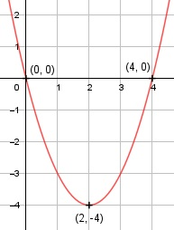

Aufgabe 15 f(x) = x2 - 4x f'(x) = 2x - 4, f''(x) = 2, f'''(x) = 0 Definitionsbereich: -∞ < x < ∞ Wertebereich: -∞ < f(x) ≤ - 4 Asymptoten: - Symmetrie: - Nullstellen: x2 - 4x = 0 x * (x - 4) = 0 x1 = 0 x2 - 4 = 0| +4 x2 = 4 N1(0|0), N2(4|0) Schnittpunkt mit der y-Achse: f(0) = 02 - 4 * 0 = 0 Sy(0|0) Extrempunkte: 2x - 4 = 0 |+4 2x = 4 |:2 x = 2, f(2) = 22 - 4 * 2 = -4 f''(x) = 2 < 0 --> Tiefpunkt (2|-4) Alternativ: Scheitelpunktberechnung f(x) = x2 - 4x f(x) = x2 - 4x + 4 - 4 f(x) = (x - 2)2 - 4 S(2|4) Wendepunkte: 2 = 0 --> Widerspruch, keine Wendepunkte Graph:
